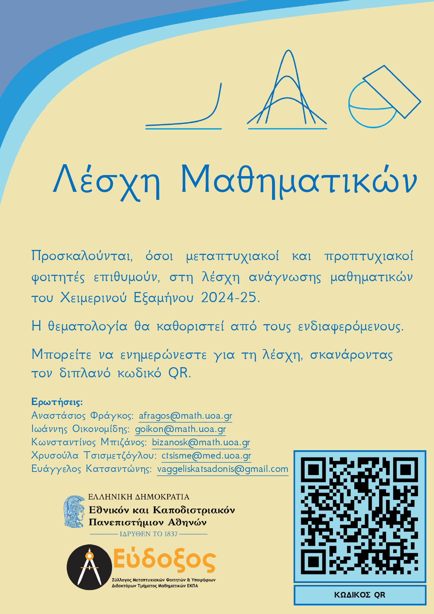

❒ Ευρετήριο
❒ Παλαιότερα έτη
Λίγα λόγια για τη λέσχη
Σκοπός αυτής της λέσχης (που διοργανώνεται πρώτη φορά το χειμερινό εξάμηνο 2024-25) είναι να έρθουμε σε επαφή με μαθηματικά αντικείμενα που δεν διδάσκονται, ή δεν διδάσκονται πλέον, στο τμήμα μας.
Απευθύνεται κυρίως σε μεταπτυχιακούς φοιτητές, αλλά εννοείται ότι είναι ευπρόσδεκτοι και προπτυχιακοί φοιτητές, μέλη του Πανεπιστημίου ή γενικότερα όποιος άλλος έχει διάθεση.
Οργάνωση και επικοινωνία
Η ιδέα είναι κάθε εβδομάδα (ή κάθε δύο εβδομάδες) να διαβάζουμε ένα μέρος ενός βιβλίου κι έπειτα να το συζητάμε. Ίσως κάθε φορά κάποιος να αναλαμβάνει να παρουσιάσει.
Εκδήλωση ενδιαφέροντος:
Εάν ενδιαφέρεστε να παρακολουθήσετε / συμμετάσχετε στη λέσχη, καλό θα ήταν να συμπληρώσετε το όνομά σας παρακάτω:
Εκδήλωση ενδιαφέροντος - Λέσχη Ανάγνωσης Μαθηματικών
Mailing list:
Εάν θέλετε να λαμβάνετε ενημερώσεις για τη λέσχη στο email σας, στείλτε μήνυμα στο afragos@math.uoa.gr.
Για ερωτήσεις:
afragos@math.uoa.gr ή kostasbizanos@gmail.com ή vaggeliskatsadonis@gmail.com
Τόπος διεξαγωγής
Πρόγραμμα
Θα αποφασιστεί αργότερα.
- ~~~
Προτεινόμενα θέματα
Συλλογή θεμάτων:
Όποιος ενδιαφέρεται να παρακολουθήσει το σεμινάριο, μπορεί να προτείνει στα email της οργάνωσης θέματα που τον ενδιαφέρουν. Οι προτάσεις που λαμβάνουμε θα προστίθενται παρακάτω.
Τα προτεινόμενα θέματα ως τώρα:
Τα θέματα που θα μας απασχολούν κάθε φορά, θα καθορίζονται από τους ενδιαφερόμενους. Οι προτάσεις προς στιγμήν είναι οι εξής:
Άλγεβρα:
- Θεωρία Ομολογίας
- ---
Ανάλυση:
- Γεωμετρική θεωρία μέτρου και γεωμετρική ανάλυση
- B. White, Topics in Geometric Measure Theory, Stanford University.
- L. Evans, R. Gariepy, Measure Theory and the Fine Properties of Functions, CRC Press, 2015.
- S. Donaldson, Geometric Analysis, Imperial College of London.
- Εργοδική θεωρία
- M. Einsiedler, T. Ward, Ergodic Theory, Springer, 2011.
- P. Walters, An Introduction to Ergodic Theory, Springer, 1982.
- K. Petersen, Ergodic Theory, Cambridge University Press, 1983.
- Α. Μενεγάκη, Εργοδική Θεωρία, Σημειώσεις ΕΚΠΑ, 2017.
- Θεωρία κατανομών
- G. Folland, Real Analysis, John Wiley and Sons, 1999.
- N. Boer, Distribution Theory, University of Groningen, 2018.
- R. Melrose, Introduction to Microlocal Analysis, MIT, 2007.
- Ν. Γιαλελής, Θεωρία Κατανομών, Σημειώσεις ΕΚΠΑ, 2024.
- Πολυμεταβλητή μιγαδική ανάλυση
Γεωμετρία:
- Διαφορικές μορφές
- M. do Carmo, Διαφορικές Μορφές, Leader Books, 2010.
- M. Spivak, Λογισμός σε Πολλαπλότητες, ΠΕΚ, 2019.
- V. Guillemin, P. Heine, Differential Forms, MIT, 2018.
- Ροές Ricci
- W. Kuhnel, Differential Geometry, AMS, 2015
- C. Hopper, B. Andrews, The Ricci Flow in Riemannian Geometry, Springer, 2010.
- R. Bamler, Ricci Flow, Standford University, 2015.
Διαφορικές εξισώσεις:
- Λογισμός μεταβολών
- L. Evans, Partial Differential Equations, AMS, 2010
- D. Logan, Εφαρμοσμένα Μαθηματικά, ΠΕΚ, 2022.
- J. Calder, The Calculus of Variations, University of Minnesota, 2024.
- Μαθηματική βιολογία και οικολογία
- Κλασματικές παράγωγοι
- Y. Xiao-Jun, General Fractional Derivatives, CRC Press, 2019.
- V. Daftardar-Gejji, Fractional Calculus and Fractional Differential Equations, Birkhaüser, 2019.
- F. Mainardi, Fractional Calculus and Special Functions, University of Bologna, 2013.
Στατιστική:
- Αλγεβρική Στατιστική
- H. Zimmermann, Algebraic Statistics, Hamburg University of Technology, 2009.
Φυσική:
- Θεωρία Χορδών (μόνο για τα μαθηματικά της)
- Κβαντική Φυσική
- P. Woit, Quantum Theory, Groups and Representations, Springer, 2017.
- B. C. Hall, Quantum Theory for Mathematicians, Springer, 2013.
- J. Watrous, The Theory of Quantum Information, Cambridge University Press, 2018.
Ειδικά θέματα:
- Διαφορική υπερβολική γεωμετρία (και δίκτυα)
- B. Loustau, Hyperbolic Geometry, 2021.
- Συλλογή Papers, Hyperbolic Networks: Theory, Architectures and Applications.
- Εφαρμογές της μιγαδικής ανάλυσης στη φυσική
- J. Brown, R. Churchill, Complex Variables and Applications, McGraw-Hill, 2009.
- J. Marsden, M. Hoffman, Βασική Μιγαδική Ανάλυση, Συμμετρία.
- Λογισμός Umbral
- Σύνολα και πολυπλοκότητα
- G. Edgar, Measure, Topology and Fractal Geometry, Springer, 2008.
- C. Bishop, Y. Peres, Fractals in Probability and Analysis, Cambridge University Press, 2016.
- Το θεώρημα Mayer-Vietoris
- A. Hatcher, Algebraic Topology, 2001.
- Ι. Τσελεπίδης, Αλγεβρικές Εκδοχές των Θεωρημάτων Mayer-Vietoris και Τοπολογικές Εφαρμογές αυτών, Πσνεπιστήμιο Κρήτης, 2020
- Υπεργραφήματα
- V. Voloshin, Introduction to Graph and Hypergraph Theory, Nova Science Publishers, 2009.
- Ψηφιδώσεις
- B. Grunbaum, G. Shephard, Tilings and Patterns, W. H. Freeman and Company, 1987.
Αφίσα
